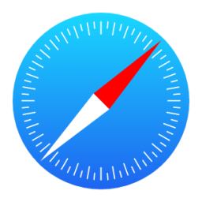

Entre com outro navegador!

Entre no link para fazer o download de um outro navegador
Para baixar o Opera
Para baixar o Chrome
Para baixar o Mozilla
Para baixar o Safari
Para baixar o Edge
Depois de baixar teste para ver se está funcionando:
Voltar para a página das
Redes Sociais
.